2,58 millones de parámetros y 6,4 GFLOPs. Elegido tras comparar tres tamaños.
Imágenes originales generadas sintéticamente y anotadas a mano, con partición agrupada.
Categorías para palets, embalajes y dimensiones correctas o incorrectas.
Por imagen. Equivale a unos 145 fotogramas por segundo en una NVIDIA A100.
Funcionamiento interno
Arquitectura del modelo
El sistema de AURION divide la detección en tres bloques principales: extracción de características, fusión de información visual y predicción final.
01
Backbone
Extrae características relevantes de la imagen, como bordes, formas, texturas y patrones visuales útiles para detectar anomalías.
02
Neck
Une información de distintas resoluciones para mejorar la detección de objetos grandes y pequeños dentro de la escena logística.
03
Head
Realiza las predicciones finales: clase detectada, posición de la caja y nivel de confianza asociado a cada resultado.
Clasificación logística
Clases que detecta
Las seis clases permiten distinguir entre estado del palet, calidad del embalaje y corrección dimensional de la mercancía.
01
Palet en buen estado
Unidad logística apta para manipulación y almacenamiento.
02
Palet dañado o fisurado
Palet con defectos visibles que pueden comprometer seguridad o eficiencia.
03
Paquete correcto en embalaje y dimensiones
Carga bien envuelta y ajustada al estándar esperado.
04
Paquete con embalaje incorrecto
Dimensiones válidas, pero envoltorio deficiente, roto o mal colocado.
05
Paquete con dimensiones incorrectas
Embalaje correcto, pero volumen o posición fuera del estándar.
06
Paquete incorrecto en embalaje y dimensiones
Escenario de mayor riesgo dentro de la inspección automatizada.
Entrenamiento y validación
Cómo se entrenó el sistema
El entrenamiento se diseñó para exponer al modelo a distintas vistas, condiciones de iluminación y combinaciones de carga.
Se anotaron a mano 870 imágenes originales para cubrir las seis clases de AURION. La augmentación se aplica solo al conjunto de entrenamiento, nunca antes de partir los datos.
Se aplicó data augmentation para mejorar la capacidad de generalización ante cambios de ángulo, iluminación y disposición de la carga.
Se buscó mantener un número similar de ejemplos por clase para evitar sesgos fuertes en la predicción.
1
Preparación del dataset
Recopilación de imágenes, labels y organización de las seis categorías principales.
2
Entrenamiento en Google Colab
Uso de GPU NVIDIA A100 para acelerar el proceso de entrenamiento del modelo.
3
300 iteraciones
Entrenamiento prolongado para ajustar detección, localización y clasificación.
4
Pruebas comparativas
Comparación entre YOLO11n, YOLO11s y YOLO11m en condiciones idénticas antes de fijar la arquitectura final.
Selección técnica
Tres tamaños, el mismo resultado
Se entrenaron YOLO11n, YOLO11s y YOLO11m en condiciones idénticas: 150 épocas, 640 píxeles, paciencia 30 y semilla fija. Los tres quedan dentro de un punto de mAP50-95.
YOLO11n2,6 M parámetros
0.741
12,1 min
YOLO11s9,4 M parámetros
0.733
13,3 min
YOLO11m20,1 M parámetros
0.744
20,9 min
Precisión mAP50-95 sobre validación · barra completa = 1.000
El modelo grande aporta 0.003 sobre el pequeño, con ocho veces más parámetros: una diferencia dentro del ruido de un conjunto de validación de 130 imágenes. Se elige el nano porque un puesto de control industrial se beneficia de un modelo que corre en hardware modesto, y la capacidad extra no compra precisión medible en esta tarea.
Punto de operación
Dónde poner el umbral de decisión
El umbral de confianza decide qué detecciones se aceptan. Subirlo reduce falsas alarmas, pero también deja escapar defectos. Mueve el control para ver el efecto medido.
La precisión apenas se mueve hasta 0.6, momento en que ya se pierde recall. El motivo está en los falsos positivos: su confianza media es de 0.532, así que no son detecciones dudosas que un umbral pueda filtrar, sino errores seguros de sí mismos. Como un falso positivo cuesta una revisión manual y un falso negativo deja pasar producto defectuoso, el punto de operación elegido mantiene el umbral bajo.
Análisis de errores
En qué se equivoca
449 errores sobre 127 imágenes de test. No se reparten al azar: hay un patrón claro y va en la dirección que más importa evitar.
El fallo dominante es palet dañado clasificado como palet en buen estado: 52 casos, frente a solo 6 en la dirección contraria. Sumando los 15 palets dañados no detectados, hay 67 casos en los que una paleta defectuosa supera el control. Esa asimetría revela un sesgo hacia declarar la mercancía correcta, que es justo la dirección desfavorable en control de calidad. Las confusiones entre clases de paquete se concentran en pares que comparten un atributo y difieren en el otro, lo que apunta a un problema en el diseño de las cuatro categorías.
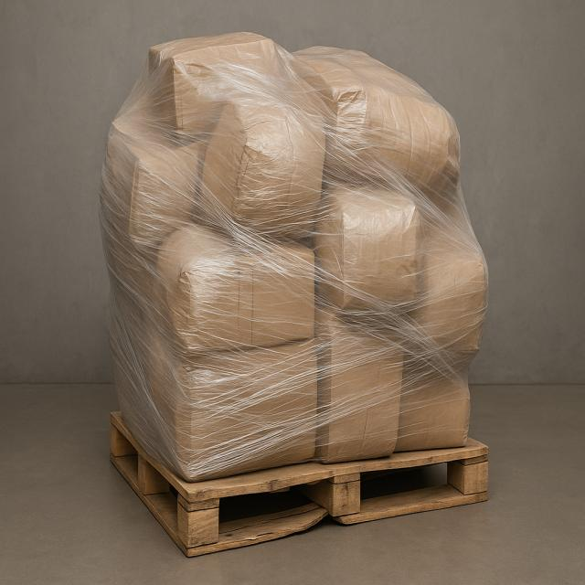
Dataset 01Imagen de entrenamiento

Dataset 02Imagen de entrenamiento
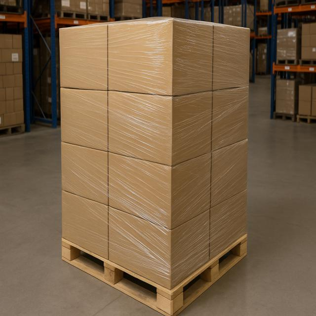
Dataset 03Imagen de entrenamiento
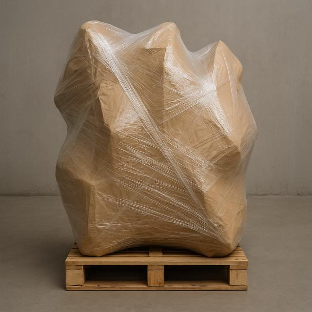
Dataset 04Imagen de entrenamiento

Dataset 05Imagen de entrenamiento
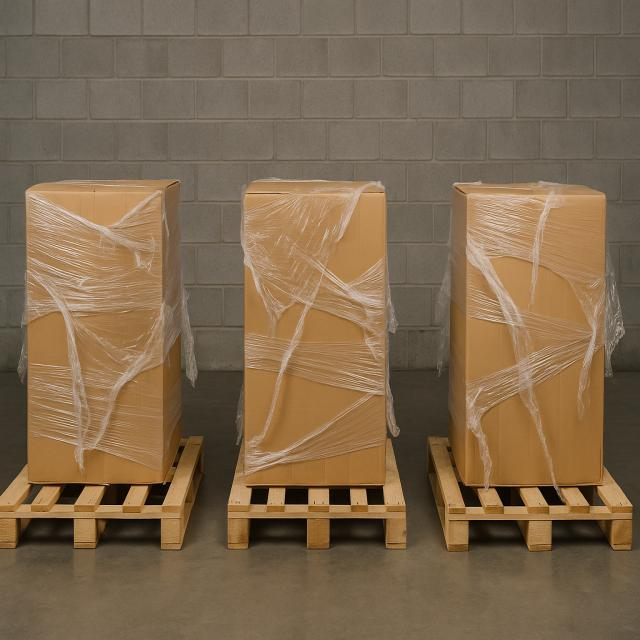
Dataset 06Imagen de entrenamiento
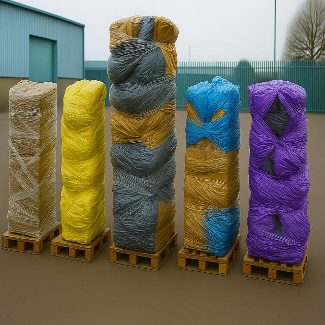
Dataset 07Imagen de entrenamiento
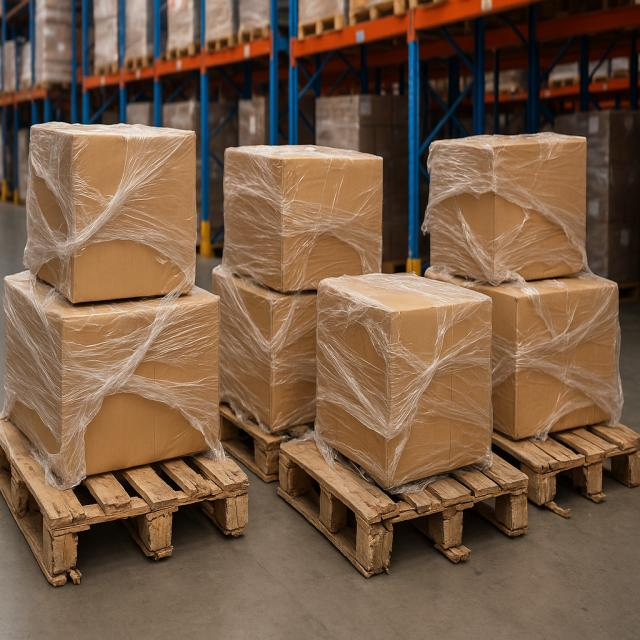
Dataset 08Imagen de entrenamiento

Dataset 09Imagen de entrenamiento
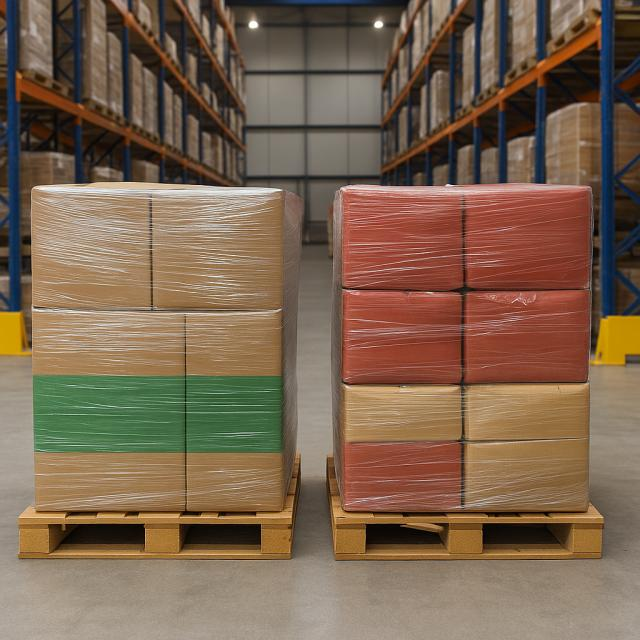
Dataset 10Imagen de entrenamiento

Dataset 11Imagen de entrenamiento
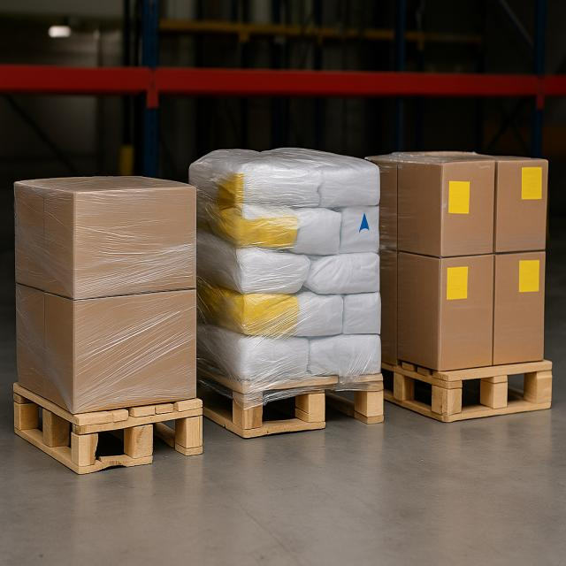
Dataset 12Imagen de entrenamiento
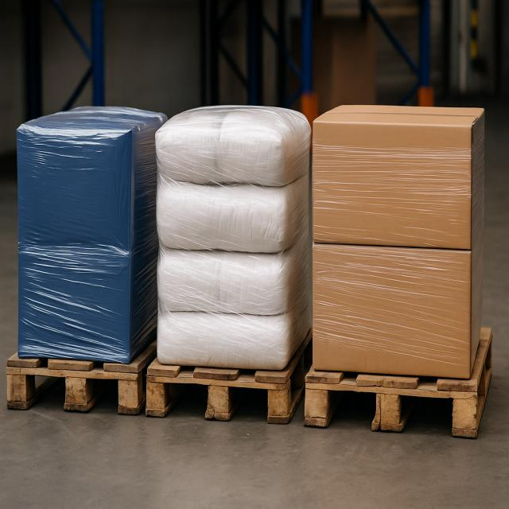
Dataset 13Imagen de entrenamiento

Dataset 14Imagen de entrenamiento
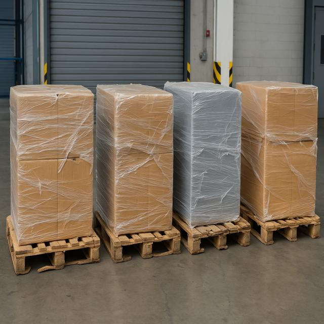
Dataset 15Imagen de entrenamiento
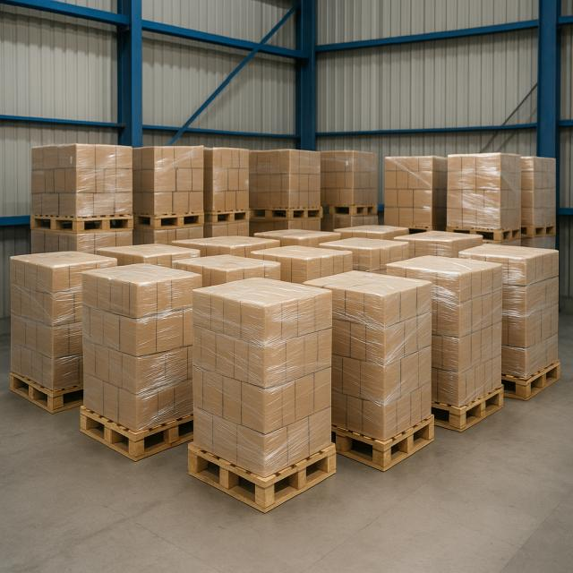
Dataset 16Imagen de entrenamiento
Modelo en acción
De la arquitectura técnica a una demo funcional
La página del modelo explica la base técnica de AURION. El siguiente paso es probarlo con imágenes o vídeos para visualizar directamente sus predicciones.